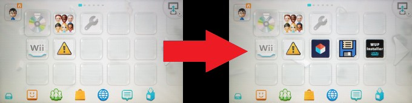
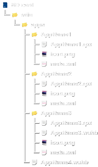
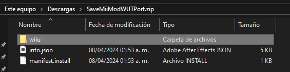
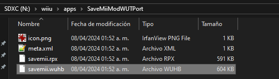
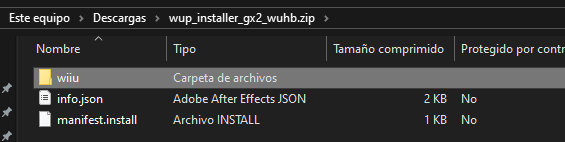
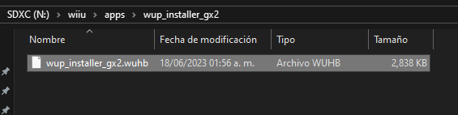
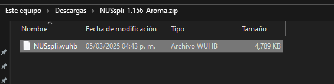
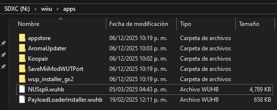

Añadir aplicaciones a Aroma
Añadir aplicaciones WUHB al menú de Wii U
En Aroma las aplicaciones WUHB (Wii U HomeBrew) aparecen directamente en el menú de Wii U. Es importante que aprendas a colocar aplicaciones WUHB por tu cuenta en caso de necesitar añadir o actualizar alguna aplicación manualmente.
Las aplicaciones WUHB se colocan en la carpeta sd:/wiiu/apps, examina la ruta de carpetas en las imágenes de referencia. Si no colocas correctamente los archivos no van a aparecer las aplicaciones en el menú de Wii U. En toda la tarjeta sólo debe existir una sola carpeta wiiu.
En la imagen de abajo el menú de Wii U pasa de no tener aplicaciones puestas a tener tres aplicaciones WUHB correctamente puestas: Homebrew App Store, SaveMii /ProcessMod y WUP Installer GX2.

Estructura

- La estructura correcta es:
sd:/wiiu/apps/AppName.wuhb. - Es incorrecto:
sd:/wiiu/apps/AppName/wiiu/apps/AppName.wuhb. - También es correcto:
sd:/wiiu/apps/AppName/AppName.wuhb. - Es incorrecto:
sd:/wiiu/apps/AppName/wiiu/apps/AppName/AppName.wuhb.
Instrucciones
- En este momento debes tener la Wii U apagada.
- Saca la tarjeta SD de la Wii U y ponla en tu PC para colocar los archivos.
- Descarga las siguientes aplicaciones:
- Descarga SaveMii /ProcessMod. Permite administrar los archivos de datos guardado de juegos de Wii y de Wii U.
- Descarga WUP Installer GX2 (Wii U Public title Installer). Permite instalar juegos y aplicaciones en formato NUS Content cifrado de Wii U (archivos
.app,.h3,title.tmd,title.certytitle.tik). - Descarga NUSspli Aroma. Permite descargar e instalar juegos y aplicaciones en formato NUS Content cifrado de Wii U (archivos
.app,.h3,title.tmd,title.certytitle.tik). - Únicamente necesitas el archivo
NUSspli-1.###-Aroma.zip.
wiiu del archivo .zip que acabas de descargar con la carpeta wiiu que ya tienes en la raíz de la tarjeta SD.info.json y manifest.install.- Descomprime el archivo
SaveMiiProcessMod.zip. - Copia la carpeta
wiiudeSaveMiiProcessMod.zipy pégala en la raíz de la tarjeta SD. - Así debe quedar SaveMii /ProcessMod en la tarjeta SD:
- Es correcto:
sd:/wiiu/apps/SaveMiiProcessMod/savemii.wuhb. - Es incorrecto:
sd:/wiiu/apps/SaveMiiProcessMod/wiiu/apps/SaveMiiProcessMod/savemii.wuhb.


- Descomprime el archivo
wup_installer_gx2_wuhb.zip. - Copia la carpeta
wiiudewup_installer_gx2_wuhb.zipy pégala en la raíz de la tarjeta SD. - Así debe quedar WUP Installer GX2 en la tarjeta SD:
- Es correcto:
sd:/wiiu/apps/wup_installer_gx2/wup_installer_gx2.wuhb. - Es incorrecto:
sd:/wiiu/apps/wup_installer_gx2_wuhb/wiiu/apps/wup_installer_gx2/wup_installer_gx2.wuhb.


- Descomprime el archivo
NUSspli-1.###-Aroma.zip. - Copia el archivo
NUSspli.wuhbdeNUSspli-1.###-Aroma.zipy pégalo en la carpetasd:/wiiu/apps. - Así debe quedar NUSspli en la tarjeta SD:
- Es correcto:
sd:/wiiu/apps/NUSspli.wuhb. - Es incorrecto:
sd:/wiiu/apps/NUSspli-1.###-Aroma/NUSspli.wuhb. - Extrae la tarjeta SD de forma segura y conecta a la Wii U con la consola apagada.


En este enlace puedes encontrar una lista de aplicaciones WUHB útiles.